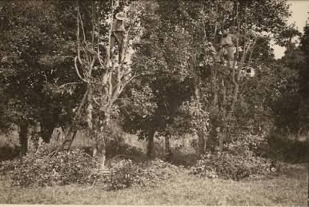
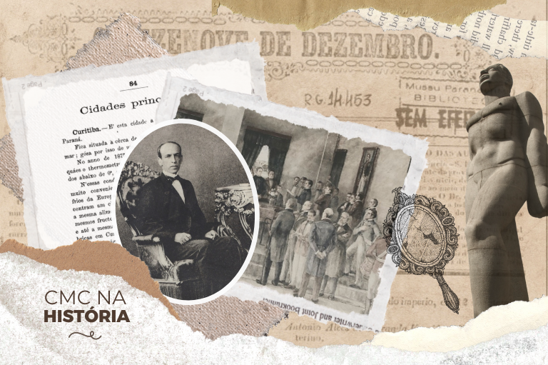
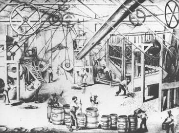

Sobre o tema
Em 29 de agosto de 1853, o Paraná conquistou sua emancipação política ao se desligar da Província de São Paulo, tornando-se a 5ª Província do Império do Brasil. O grande motor econômico que impulsionou essa independência foi o ciclo da erva-mate, riqueza nativa que financiou o desenvolvimento das cidades, das rotas de transporte e das elites locais do século XIX.

Contexto histórico
Ao longo da primeira metade do século XIX, a então 5ª Comarca de São Paulo mantinha uma intensa produção e exportação de erva-mate através dos portos de Paranaguá e Antonina. A riqueza gerada pelos engenhos de mate no Primeiro Planalto e a distância administrativa da capital paulista alimentaram o desejo de autonomia dos líderes locais. Com o apoio de figuras como Zacarias de Góes e Vasconcellos, o Imperador Dom Pedro II assinou a Lei Imperial nº 704, oficializando a criação da Província do Paraná e definindo Curitiba como sua capital.

Importância cultural
O ciclo da erva-mate e o processo de emancipação moldaram profundamente a identidade cultural paranaense. Hábitos como o consumo do chimarrão e o hábito do mate, o surgimento das arquiteturas coloniais nos engenhos e o orgulho do civismo paranaense têm suas raízes nesse período. Celebrar a emancipação de 1853 é reconhecer a coragem e a autonomia econômica que fundaram as bases do Paraná moderno.

Curiosidades
Curiosidade 1
A erva-mate pagou a "conta" da independência: Na época, a região era apenas a Quinta Comarca de São Paulo e sofria com o abandono político de São Paulo. A produção e exportação do chá-mate para países do Cone Sul (como Argentina e Uruguai) gerou uma elite econômica local tão forte e próspera que o governo imperial de Dom Pedro II percebeu que a região tinha total capacidade de se sustentar como Província autônoma.
Curiosidade 2
Recompensa por não apoiar a Revolução Farroupilha: Além do peso econômico da erva-mate, a emancipação em 1853 teve um forte motivo geopolítico. Durante a Revolução Farroupilha (1835–1845), os paranaenses se mantiveram fiéis ao Império e ajudaram a conter o avanço dos rebeldes gaúchos. A criação da Província do Paraná em 1853 serviu como uma "recompensa" de Dom Pedro II à lealdade da região, além de criar um estado-tampão estratégico no sul do país.
Memória e Patrimônio
Vou compartilhar imagens sobre a Erva-mate e a emancipação política